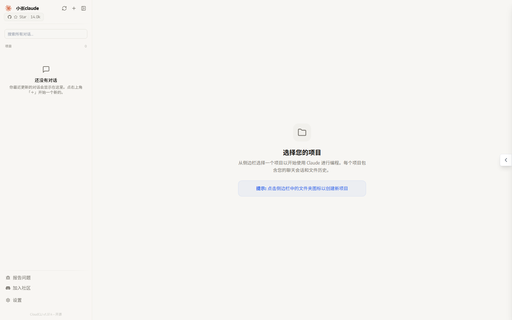
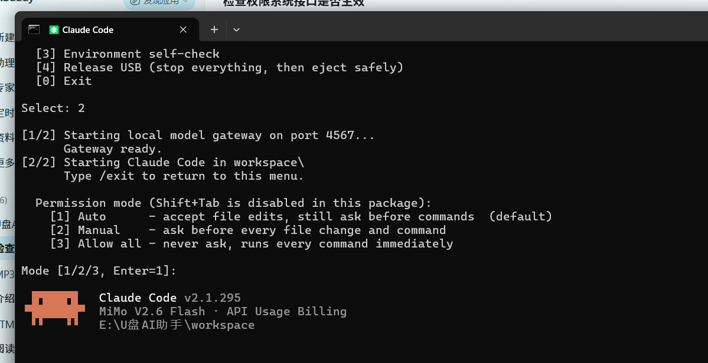
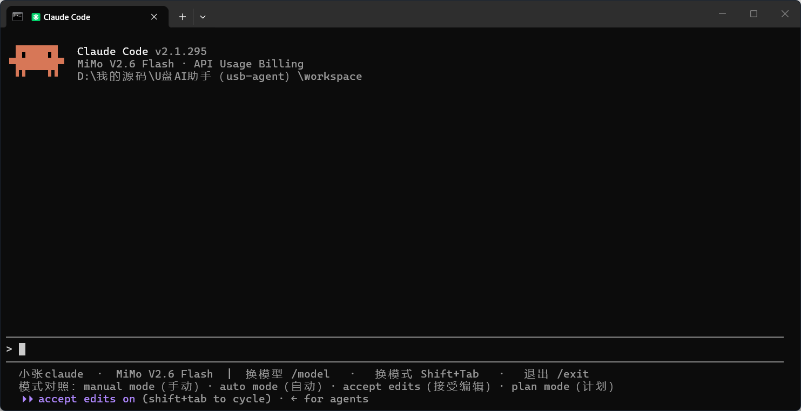
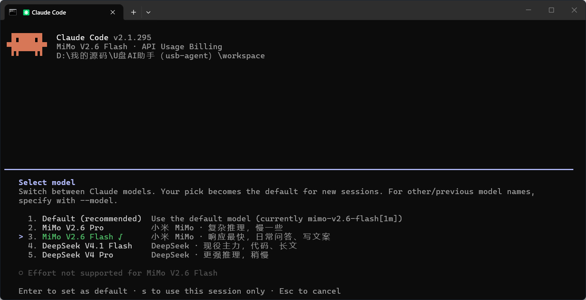
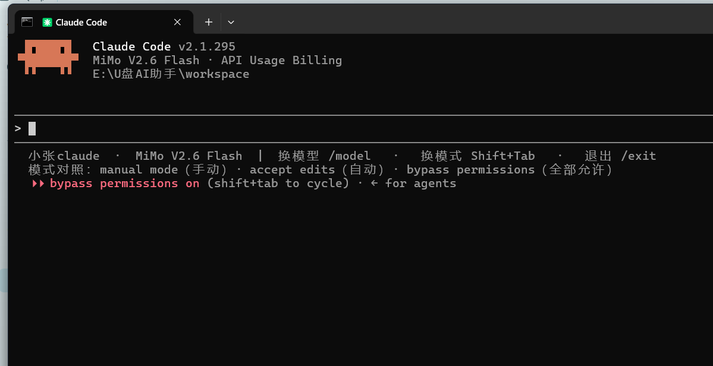
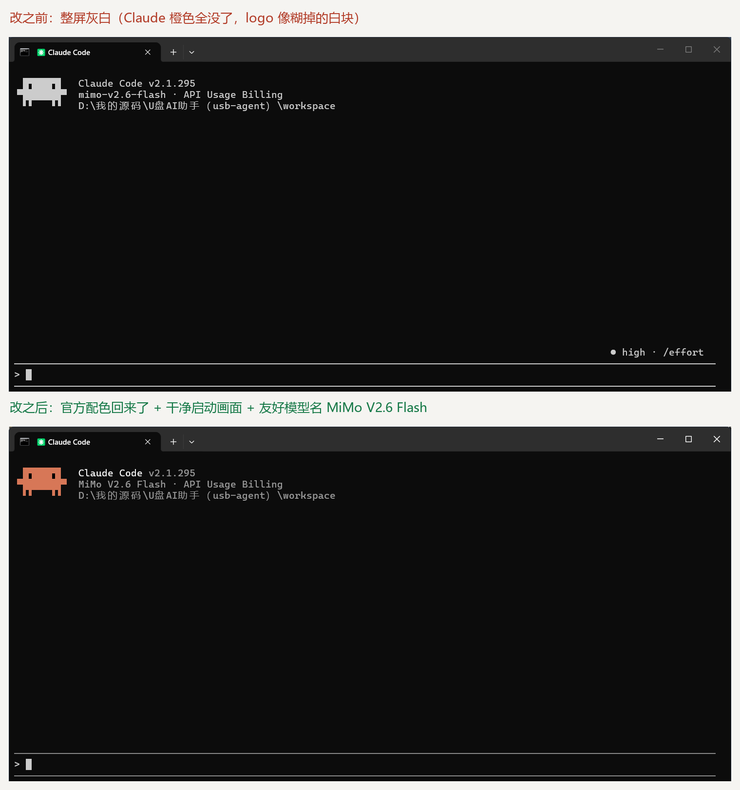

U盘AI助手（usb-agent）
运行截图 · 共 6 张 · 点击图片可在新标签页查看原图

网页端主界面
webui.png

启动器菜单
cli-menu.png

终端版状态行（中文）
cli-terminal-chinese-hints.png

/model 下拉（Default + 4 个模型）
cli-model-picker.png

Shift+Tab 权限模式循环
cli-permission-cycle.png

终端版汉化前后对比
cli-terminal-before-after.png